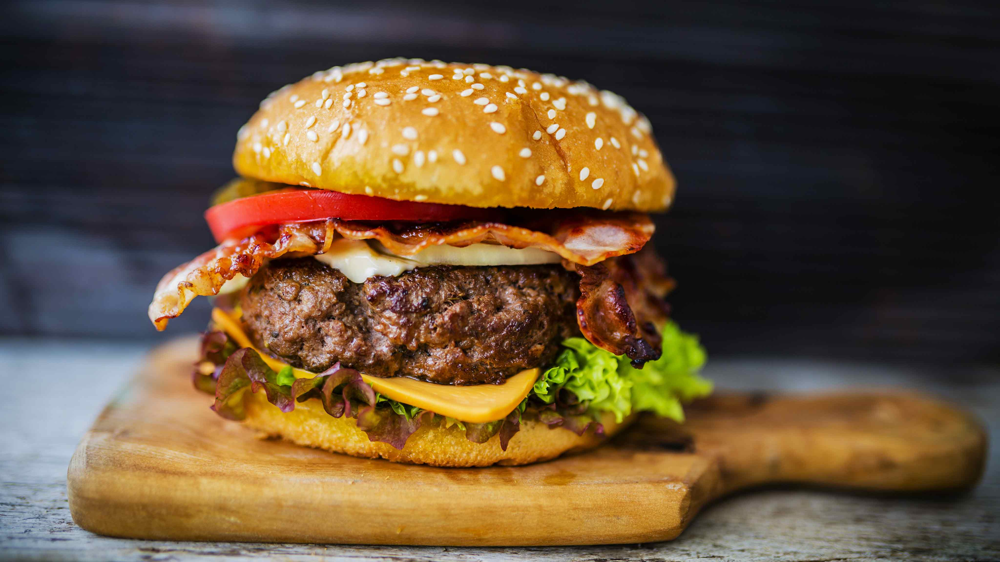

Home
Lasagna

Homemade Hamburger
A hamburger is a timeless favorite that brings together a juicy beef patty, fresh toppings,
and a soft, toasted bun for the perfect bite. Whether grilled, pan-seared, or
flame-broiled, the patty is often seasoned simply to let its rich flavor shine. Classic
toppings like lettuce, tomato, pickles, onions, cheese, and condiments like ketchup or
mustard add layers of taste and texture. From backyard barbecues to diner menus, the
hamburger is a delicious symbol of comfort food and casual dining at its best.
Ingredients
- 1 lb ground beef (80/20 blend for juiciness)
- Salt and pepper to taste
- 4 hamburger buns
- 4 slices of cheddar or American cheese (optional)
- Lettuce leaves
- Sliced tomatoes
- Sliced pickles
- Sliced onions (raw or grilled)
- Ketchup
- Mustard
- Mayonnaise (optional)
- Butter for toasting buns (optional)
Steps
- Preheat a grill or skillet over medium-high heat.
- Divide the ground beef into 4 equal portions and shape into patties about 3/4 inch thick. Season both sides with salt and pepper.
- Place the patties on the hot grill or skillet and cook for about 3–4 minutes per side, or until they reach your desired doneness.
- If using cheese, place a slice on each patty during the last minute of cooking and cover to melt.
- While the patties are cooking, lightly butter and toast the buns cut side down in a separate pan or on the grill.
- Assemble the burgers by placing a lettuce leaf on the bottom bun, followed by the cooked patty.
- Add tomato slices, pickles, onions, and your favorite condiments.
- Top with the other half of the bun and serve immediately.